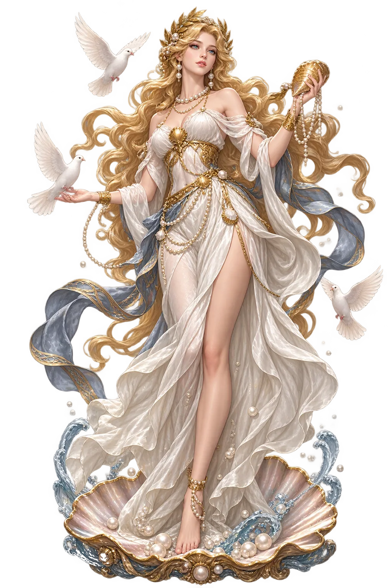
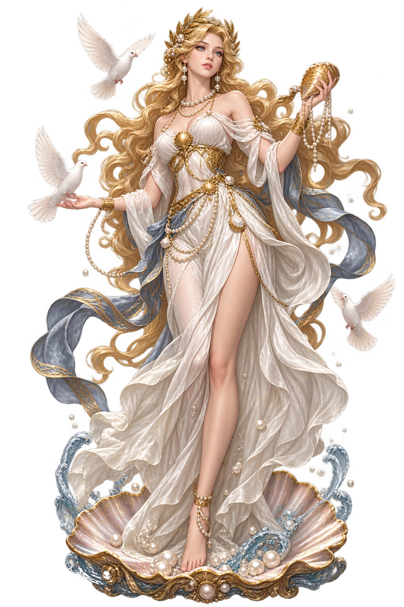

The Living Myth
Love, Beauty, Desire · Love, Beauty, the Morning and Evening Star · The Roman goddess of love and beauty, mother of Aenēās

Stories of Venus
Venus’ mythology is Aphrodite’s retold in a Roman accent — the foam-birth, the Judgement of Paris, the loves and the intrigues — plus a Roman coda the Greeks never wrote: the divine ancestress of Rome. Virgil’s Aeneid makes her the poem’s moving force, the goddess who shields her son through Troy’s fall to Italy’s shore; and the Julian gens made her their household god.
The Greek story: Cronus’ severed genitals fell into the sea, and from the foam (aphros) rose the goddess, first at Cyprus’ shore. Roman poets from Ennius onward retold it with Venus’ name — the sea-foam’s child Latinized without effort, the island of Cyprus keeping the cult’s oldest address.
At the wedding of Peleus and Thetis, the uninvited Strife threw the golden apple ‘to the fairest’ — and Hera, Athena, and Venus asked the shepherd Paris to judge. Venus’ bribe, Helen, won; the judgement’s price was Troy. The Roman telling keeps every detail — only the goddess’ name has changed, and the empire’s stake in the story.
Virgil gives Venus her Roman apotheosis: she saves Aeneas from Troy’s burning, guides him through the sea-wanderings to Italy, and by the divine machinery’s decree founds the line — ‘I am Caesar and his whole Julian race’ — that will rule the world. No Greek goddess had such a son; the epic made her Rome’s mother.
The De Rerum Natura opens with the great hymn: ‘Venus, mother of Aeneas and his race, delight of men and gods, under your onrushing the leaping clouds flee’. Lucretius made her the Epicurean nature-principle — the generative urge that moves atoms and seasons — philosophy’s most surprising use of a love-goddess.
The Mother of Aeneas, Namesake of the Planet
Venus is the Roman goddess of love and beauty — early and completely identified with Greek Aphrodite, but with a Roman political career the Greek original never had: mother of Aeneas, ancestress of the Romans, divine patron of the Julian line, and the planet’s namesake. From Lucretius’ opening hymn to the courtesan-cults of the seaports, she is Rome’s most versatile goddess — and the only one in this lexicon whose name needs no restoration at all.
The planet Venus — Lucifer at dawn, Vesper at dusk — is her celestial body, brightest in the sky.
By the Trojan Anchises she bore Aeneas — and through him, the whole Roman race claimed her blood.
“Venus the Mother”: Caesar dedicated her a temple in the Forum of Caesar, claiming her line.
The Greek myth made her sea-born of foam — the Roman poets kept the story and Latinized the name.
From the original script to the living URL
Venus
The name survives in scholarly transliteration. Venus is the standard Roman romanisation, documented in academic sources — “The Roman goddess of love and beauty, mother of Aenēās; namesake of the planet Venus (epigraphic VENVS; all vowels short, so the standard form carries no diacritics)”. Because the spelling uses only Latin letters, the form is the same in both ASCII and Unicode.
The original script for this roman name has not yet been added to PUNICODEX. The form shown is a scholarly transliteration.
venus
The plain venus form is identical to the Unicode restoration. Because this name is already written in Latin letters, no diacritics, stress, or script information were lost — only capitalization differs.
Venus
The Unicode restoration does not need to recover lost marks for Venus. Its value is canonical spelling and consistent cataloguing, not the reconstruction of erased orthography. The domain is readable as-is to both DNS and humanity.
Venus.com
This restoration is written entirely in ASCII letters — no Punycode encoding stands between Venus and the DNS. The domain reads identically to machines and to human eyes.
The attested spelling family of Venus
Venus
The full Unicode restoration. venus.com is not in the PuniCodex collection — it is watched for release; if it drops, this temple upgrades to an owned flagship. Attested by Ovid, Virgil, Lewis & Short.
How Venus was spoken
How Venus is preserved in writing
A bespoke provenance study for Venus is being prepared by the PUNICODEX scholarly team.
Contribute scholarly provenance →The lore you have read is the living myth. Extended Lore opens the scholarly vault beneath it: the cult and its material remains, a history of the image, the name after antiquity, a meditation on what the name still means, and the full scholarly apparatus — etymology, orthography, sources.
Enter Extended Lore